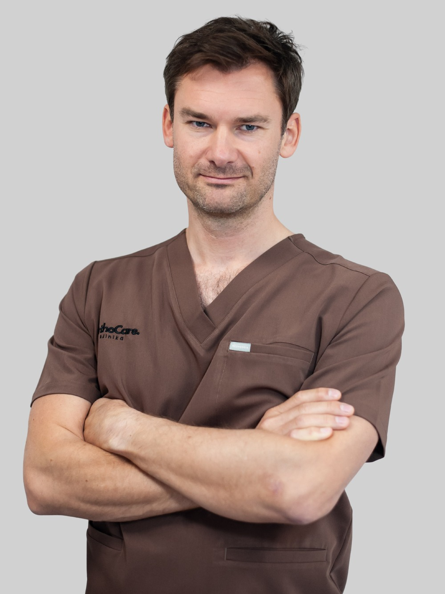

lek. Piotr Zaorski
Specjalista ortopedii i traumatologii narządu ruchu
Lek. Piotr Zaorski jest absolwentem I Wydziału Lekarskiego Warszawskiego Uniwersytetu Medycznego. Posiada wieloletnie doświadczenie w chirurgii ręki, które zdobywał m.in. jako starszy asystent w Klinice Chirurgii Ręki Uniwersyteckiego Szpitala Klinicznego w Łodzi (2017–2024). Od 2010 roku związany z Carolina Medical Center, a od 2022 roku pracuje również w Instytucie Medycznym MSWiA oraz Szpitalu Powiatowym w Opocznie.
Specjalizuje się w leczeniu schorzeń ręki, nadgarstka i łokcia – zarówno pourazowych, jak i zwyrodnieniowych. Wykonuje małoinwazyjne zabiegi artroskopowe, w tym artroskopię nadgarstka i kolana, a także zabiegi w znieczuleniu WALANT: operacje cieśni nadgarstka, palca trzaskającego i przykurczu Dupuytrena. Stosuje również hydrodekompresję nerwu pośrodkowego.
Odbył zagraniczne staże m.in. w Chinach (Shanghai, Fudan University Huashan Hospital) i we Włoszech (Savona, Centro Regionale di Chirurgia della Mano). W swojej karierze leczył zawodników sportów walki, bokserów i piłkarzy. Znany jest z wysokiej precyzji zabiegów i indywidualnego podejścia do pacjenta.
